Before reading the proof, you must be familiar with the cosine rule, if not then click here. Imagine two lines with the length of 1, one of them is raised by angle j from the x-axis and the other is raised by angle k. Lets call the end points of the two lines A and B:
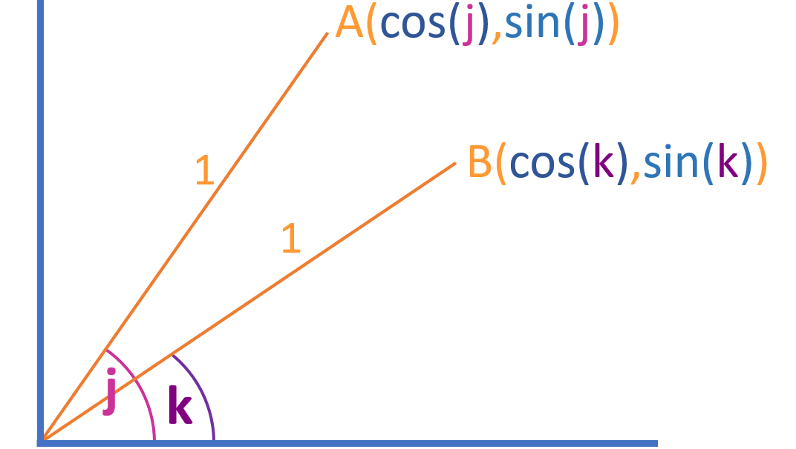Let there be a green line, which connects from A to B. We will call the length of this line c:
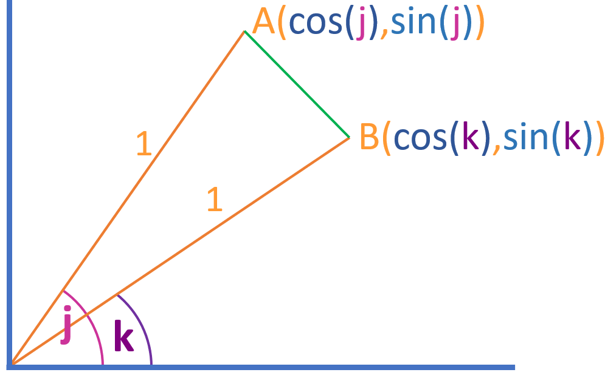Using the cosine rule, we know that:
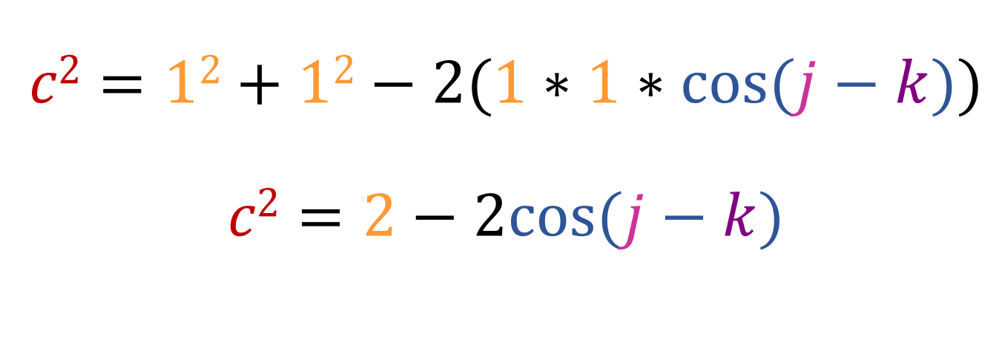Now lets make a horizontal line at point A and a vertical line at point B:
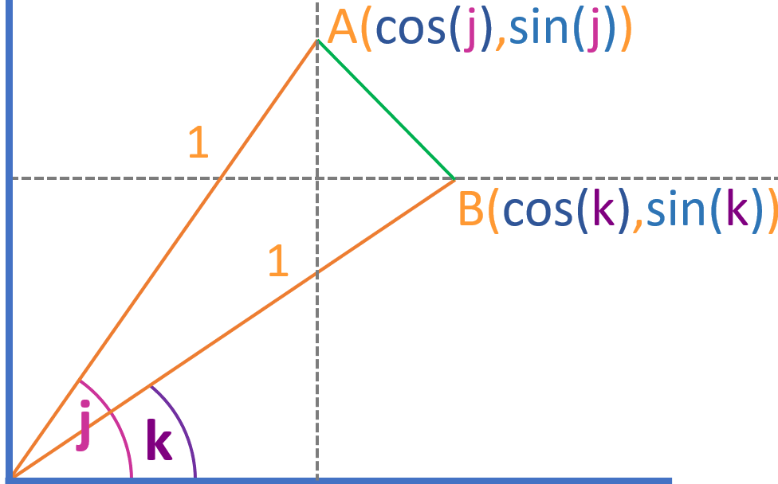You will notice that a triangle has been formed with the green line as the hypotenuse, so using the Pythagoras' theorem:
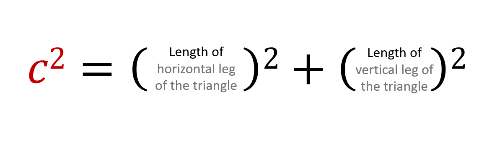Looking at the graph, we know that the length of the horizontal leg is [cos(j) - cos(k)] and that the length of the vertical leg is [sin(j) - sin(k)], so we can rewrite the above equation as:
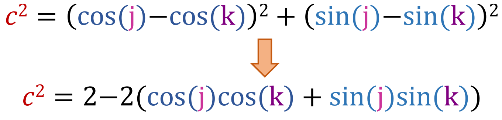Using the cosine rule and the Pythagoras' theorem, we get two equations for c2:
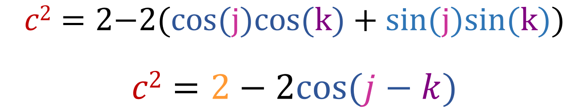From these two we get:
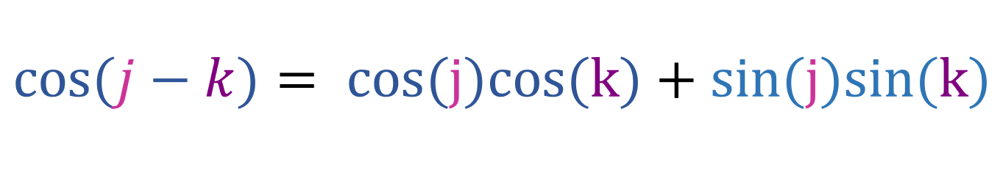This is the subtraction formula for cosine, as for sine:
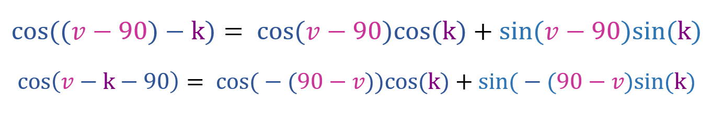Since [cos(x) = sin(x + 90)], we can say that [cos(x - 90) = sin(x)]. Therefore:
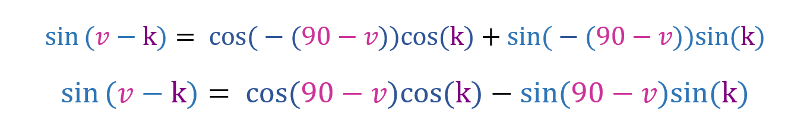Since [cos(90 - x) = sin(x)] and [sin(90 - x) = cos(x)], we can conclude:
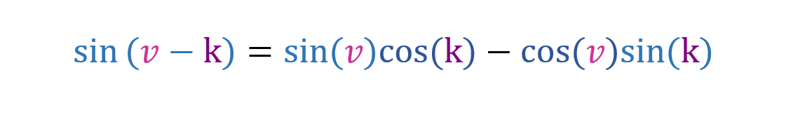And that is the subtraction formula for sine. Now lets divide sin(j - k) by cos(j - k):

Now lets divide both the numerator and the denominator by cos(j)cos(k):

We already know that tan(x) is [sin(x)/cos(x)], so:

And that is the subtraction formula for tan(x).